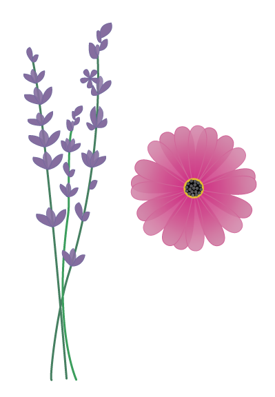

Vježbe kroz kolegij...
Vježbe - vektorska grafika
1. vježba
Glavna tema prve vježbe bili su fontovi. Mogli smo odabrati jedan od tri programa u kojima smo mogli raditi. Ja sam izabrala FontForge. Osim izrade slova našeg imena i prezimena i slovnih znakova hrvatskoj jezika, morali smo font prilagoditi sustavu i omogućiti ostalim programima da koriste naš font. To smo mogli napraviti tako da generiramo font u True Type (ttf.) formatu i instaliramo ga na naše računalo, tada font možemo koristiti u ostalim programima poput worda i photoshopa.

2. vježba
U drugoj vježbi smo se upoznali sa Bezierovim krivuljama, te ih naučili crtati u koridnatnom sustavu.Bezierova krivulja je parametarska krivulja definirana sa 4 točke i predstavlja temelj današnje vektorske grafike. Programi koji smo mogli korisiti su Adobe Illustartor i Inkscape. Naš zadatak je bio kreirati dvije vlastite krivulje čije su točke poravnate prema mreži koordinatnog sustava, definirati im boju i debljinu obruba te između njih napraviti interpolaciju (Blend). Koristeći vlastiti font s prošle vježbe preko krivulja ispisali smo tekst vlastitih inicijala i od njih napravili masku.

3. vježba
Trećom vježbom sam nastavila rad u Illustaroru. U ovoj vježbi glavne temu su bile sustavi boja, transformacije, multipliciranje i grupiranje.
4. vježba
U četvrtoj vježbi obrađuje se tema izrade složenih objekata koji se sastoje od više staza metodama spajanja (Unite/Compound path) ili oduzimanja oblika (Difference/Subtract). Apliciranje različitih vrsta gradijenata (linearni, radijalni, mesh) od dvije ili više boja te transparencija i poredak slojeva u izradi složene grafike. Zadatak četvrte vježbe bio je uz grafiku iz uputa kreirati i vlastiti složeni objekt u kojem smo korisitili tehnike spajanja i izrezivanja objekata i primijenili različite vrste gradijenata.


Projektni zadatak
U prvom projektnom zadatku trebali smo ujediniti znanje i vještine iz vektorske grafike koje smo naučili u prethodne četiti vježbe te kreirati vlastiti font s nekoliko znakova koje ćemo korisiti pri izradi projektnog zadatka i jednostranični dokument veličine A3 u Adobe Illustratoru ili Inkscape-u. Tema ilustracije bila je florai/ili fauna podmorja.

Vježbe - piksel grafika
5. vježba
Glavna teme pete vježbe bile su tehnike digitalnog retuširanja fotografija za postizanje realističnog efekta, selekcije uz pomoć Lasso Toola, uklanjanje nedostataka na slici zamućivanje, kloniranjem, i kopiranjem te lokalne i globalne korekcije boje. Radili smo u programima za piksel grafiku, Adobe Photoshopu ili Gimpu


6. vježba
U šestoj vježbi prolazili smo kroz tehnike neinvazivnog koloriranja slike koje se može primijeniti na crno-bijele slike ili slike u boji kojima želimo promijeniti nijansu određenih područja. Selekcijom željenih dijelova slike stvarali smo maske kojima skrivamo ili otkrivamo efekte kolorizacije. Boja se aplicira na zaseban sloj (layer) kako ne bismo uništili originalne tonove i kako bismo mogli lakše napraviti promjene u kasnijim fazama obrade slike.


7. vježba
Fotomontaže je kombiniranje više fotografija izrezivanjem dijelova različitih slika i spajanjem u jednu cjelinu. Pritom je najvažnije kvalitetno selektirati dijelove koje želimo izrezati kako bi se što bolje uklopili u finalnu sliku. U ovoj vježbi smo prolazili kroz različite tehnike selektiranja jednostavnih i složenih oblika. Jednostavne tehnike selekcije uključuju alate kojima selektiramo poligone i oštre rubove objekata, a složenije tehnike selekcije podrazumijevaju selekciju putem kanala slike ili crtanje maski brush i eraser alatima u modu quick mask. Vježba se bavi i izradom i uklapanjem sjena objekata koje smo uvezli izrezivanjem i korekcijom boja kako bi se pojačao dojam realističnosti.


Projektni zadatak 2
Zadatak drugog projektnog zadatka bio je kreirati sliku u Adobe Photoshopu ili Gimp-u kao kompoziciju više fotografija koristeći tehnike retuširanja, fotomontaže i koloriranja. Uz priložene fotografije morali smo dodati i tri vlastite fotografije. Cilj ovog projektnog zadatka bio je pokazati naučene vještine u programima za piksel grafiku.

Vježbe - video/web
8. vježba
Osma vježba se bavi osnovama obrade video materijala i uvođenjem multimedije u video projekt. Rezultat vježbe će biti kinemagraf čija je karakteristika spajanje statične i pokretne slike. Kinemagraf (cinemagraph) je video isječak čija se sekvenca ponavlja u beskonačnost, najčešće u GIF formatu, a u kompoziciji spaja pokretnu i statičnu grafiku (sliku i video). Dok je većina grafike statična, samo mali dio je animiran (pokretan). U izradi vježbe za obradu statične slike te krajnji izvoz koristli smo Photoshop ili GIMP, a obradu video isječka radili smo u Adobe Premiereu ili u alternativnim programima Olive 0.1 ili Shotcut koji imaju slično sučelje kao i Premiere.

9. vježba
Teme devete vježbe su rezanje i spajanje video isječaka iz više izvora, video efekti, brisanje i dodavanje zvuka te dodavanje i obrada teksta. U izradi vježbe za obradu video isječka radili smo u Adobe Premiereu ili u alternativnim programima Olive 0.1 ili Shotcut.
10. vježba
U ovoj vježbi prelazimo na stvaranje web sadržaja, kao nosioca multimedije na webu. Multimedijski sadržaj koji želimo prenijeti preko weba se odnosi na tekst, sliku, video i zvuk. Web stranice se kreiraju putem označnog jezika HTML (Hypertext Markup Language), kojim definiramo tip sadržaja koji želimo prikazati. HTML dokumente kodiramo u različitim tekst editorima te spremamo dokumente kao .html datoteke. Stiliziranje HTML sadržaja se definira jezikom CSS (Cascading Style Sheets) kojim određujemo veličine, pozicije, boje i druge stilske karakteristike sadržaja.Također smo stvorili besplatni računa na Github platformi na kojoj smo stvorili svoju web stranicu i uploadali sve datoteke web stranice stvorene lokalno na našem računalu.
Moja web stranica